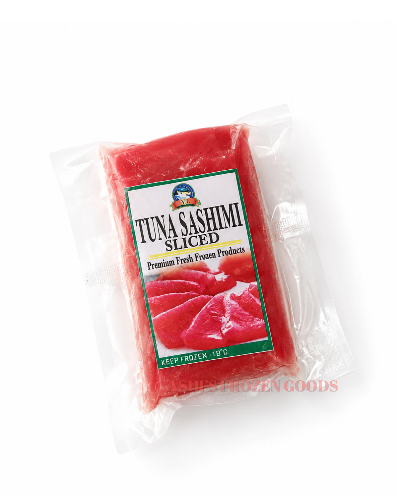

Guides
Where to Buy Sashimi-Grade Tuna in Iloilo
Quick answer
You can buy sashimi tuna in Iloilo at Ashi's Frozen Goods, Door 4, AC Arcade Building, Felix Gorriceta Jr. Avenue, Brgy. Pandac, Pavia, 5001 Iloilo. We carry GenSan tuna in two sashimi formats: Tuna Sashimi (200g - Sliced) at ₱300 per pack and Tuna Saku Bar for Sashimi at ₱1,000 per kg. We're open daily, 10:00 AM to 7:00 PM. You can visit the shop or message us on Facebook Messenger to order.
Key takeaways
- Ashi's Frozen Goods in Brgy. Pandac, Pavia sells GenSan tuna for sashimi in two formats: pre-sliced and saku bar.
- Tuna Sashimi (200g - Sliced) is ₱300 per pack. Tuna Saku Bar for Sashimi is ₱1,000 per kg. Check our Menu for current prices and availability.
- Choose pre-sliced for convenience, or a saku bar if you want to control the thickness and presentation of each slice.
- You can order through Facebook Messenger and we'll book a Maxim rider. The delivery fee is Maxim's quoted rate for your trip.
- We also carry Salmon Sashimi (Sliced 200g) and Salmon Loin Sashimi (500g).
Looking for sashimi-grade tuna in Iloilo? Ashi's Frozen Goods, located in Brgy. Pandac, Pavia, offers tuna sashimi and tuna saku options for customers who want to prepare and serve Japanese-inspired seafood dishes at home. Whether you prefer ready-sliced tuna or a saku bar that you can slice yourself, you can explore the available selections at our Pavia shop or on our online Menu.
Where Can You Buy Tuna Sashimi in Iloilo?
For customers searching for tuna sashimi in Iloilo City and nearby areas, Ashi's Frozen Goods provides convenient access to frozen seafood products, including GenSan tuna and salmon.
Our shop is located at Door 4, AC Arcade Building, Felix Gorriceta Jr. Avenue, Brgy. Pandac, Pavia, 5001 Iloilo.
There are three ways to buy:
- Visit our shop: Browse our available seafood and meat selections in person.
- Browse online: See the products we currently offer on our website Menu.
- Message us: Send your order through Facebook Messenger.
Ashi's Frozen Goods serves households looking for tuna, salmon, sashimi products, and imported steaks.
What Does Sashimi-Grade Tuna Mean?
The term sashimi-grade is commonly used to describe fish intended for dishes where the fish is served raw or with minimal preparation. However, it is important to understand that the term alone does not establish a universal certification or guarantee that a particular product is safe to eat raw.
When purchasing tuna for sashimi preparation, customers should pay attention to product information, handling instructions, and storage recommendations.
Frozen tuna is also a convenient option for households that want to keep seafood available for planned meals. Proper storage and careful handling are important, particularly when preparing seafood for raw consumption.
At Ashi's Frozen Goods, customers can explore our tuna sashimi selections and choose the product format that best suits their intended preparation.
If you have specific questions about a product's suitability for raw consumption, please ask us before purchasing.
Quick definitions
- Sashimi
- Thinly sliced seafood served raw, usually with soy sauce, wasabi, and pickled ginger.
- Saku bar
- A trimmed, rectangular block of fish meant for slicing into sashimi portions at home.
- GenSan tuna
- Tuna associated with General Santos City in Mindanao, one of the Philippines' best-known tuna ports.
Which Tuna Sashimi Products Does Ashi's Frozen Goods Sell?
If you are looking for tuna sashimi in Iloilo, here are two options to explore.


Tuna Sashimi (200g - Sliced)
Prefer convenience? Tuna Sashimi (200g - Sliced) is a ready-sliced option for customers who want a more convenient format when preparing sashimi at home. It is ₱300 per 200g pack.
It suits customers who'd rather skip the extra preparation of slicing a whole block of tuna.
You can arrange your serving on a chilled plate and pair it with your preferred Japanese-inspired accompaniments.
Tuna Saku Bar for Sashimi
For customers who prefer preparing their own portions, Tuna Saku Bar for Sashimi offers another format to consider. It is ₱1,000 per kg.
A saku bar is a block of tuna that can be sliced according to your preferred thickness and presentation. This gives home cooks more flexibility when preparing sashimi plates or other tuna dishes.
It is worth considering if you enjoy preparing your own seafood presentation or want more control over the size and appearance of each slice.
Both products are listed on our website Menu. Check the product listing for current prices, pack sizes, and availability.
Should You Choose a Saku Bar or Pre-Sliced Tuna?
Choosing between a saku bar and pre-sliced tuna depends on your preparation preferences.
- Pre-sliced tuna: A convenient choice if you want ready-sliced portions without having to cut the tuna yourself.
- Tuna saku bar: A suitable option if you prefer slicing the tuna yourself and controlling the thickness and presentation.
If convenience is your priority, Tuna Sashimi (200g - Sliced) may be the more practical choice.
If you enjoy preparing your own sashimi plates, Tuna Saku Bar for Sashimi gives you more flexibility.
You can also explore our salmon selections, including Salmon Sashimi (Sliced 200g) and Salmon Loin Sashimi (500g), for more seafood options.
How Do You Order Tuna Sashimi from Ashi's Frozen Goods?
Ordering from Ashi's Frozen Goods is straightforward.
Option 1: Browse the Menu
Visit our website and browse the available tuna, salmon, and other frozen products. You can check current prices, pack sizes, and product listings on our Menu page. browse our Menu.
Option 2: Visit Our Pavia Shop
You are welcome to visit our physical store: Ashi's Frozen Goods, Door 4, AC Arcade Building, Felix Gorriceta Jr. Avenue, Brgy. Pandac, Pavia, 5001 Iloilo. We are open daily from 10:00 AM to 7:00 PM.
Option 3: Order Through Messenger and Request Delivery
Prefer ordering from home? Send us a message through Facebook Messenger.
To arrange delivery:
- Send us the product names and quantities you want to order.
- Provide your complete delivery address.
- Send a screenshot of your pinned location.
- We will book a Maxim rider for your order.
The delivery fee is based on Maxim's quoted rate for the specific trip.
For other inquiries, you can also contact Ashi's Frozen Goods at 0945-962-2304 or ashifrozengoods@gmail.com.
How Should You Serve Tuna Sashimi at Home?
Preparing a sashimi-style meal at home can be simple, especially when you have the right ingredients and preparation tools.
Here are a few general serving suggestions:
- Keep frozen seafood properly stored according to its product instructions.
- Follow the recommended thawing instructions and avoid leaving seafood at room temperature for extended periods.
- Use clean utensils, cutting boards, and serving plates.
- Prepare your preferred dipping sauces and accompaniments separately.
- Serve promptly after preparation and follow appropriate food safety practices.
Remember that not all frozen tuna is automatically suitable for raw consumption. Always check the product's specific handling and consumption guidance before preparing it as sashimi.
Frequently Asked Questions About Buying Tuna Sashimi in Iloilo
Where can I buy tuna sashimi in Iloilo?
You can find tuna sashimi at Ashi's Frozen Goods, Door 4, AC Arcade Building, Felix Gorriceta Jr. Avenue, Brgy. Pandac, Pavia, Iloilo. You can also browse our website Menu or message us on Facebook Messenger to place an order.
How much is tuna sashimi at Ashi's Frozen Goods?
Tuna Sashimi (200g - Sliced) is ₱300 per pack, and Tuna Saku Bar for Sashimi is ₱1,000 per kg. Check our Menu for current prices and availability.
What is the difference between tuna sashimi and tuna saku?
Tuna sashimi is tuna that has been prepared and sliced for sashimi-style serving. Tuna saku is a block that lets you slice the tuna to your preferred thickness and presentation.
Does Ashi's Frozen Goods also sell salmon sashimi?
Yes. Our salmon options include Salmon Sashimi (Sliced 200g) and Salmon Loin Sashimi (500g). Check our Menu for current prices, pack sizes, and availability.
Can I have my tuna sashimi delivered?
Yes. Message Ashi's Frozen Goods on Facebook Messenger, send your delivery address and a screenshot of your pinned location, and we'll book a Maxim rider. The delivery fee is based on Maxim's quoted rate for the trip.
What are your store hours?
Ashi's Frozen Goods is open daily from 10:00 AM to 7:00 PM at our shop in Brgy. Pandac, Pavia, Iloilo.
Get Your Tuna Sashimi from Ashi's Frozen Goods
Whether you are preparing a sashimi platter at home, planning a Japanese-inspired meal, or looking for frozen tuna in Iloilo, Ashi's Frozen Goods is ready to help you explore your options.
Browse our Menu for current product listings, prices, and pack sizes. Then message us on Facebook Messenger to place your order, or visit our shop in Pavia.
Visit
Ashi's Frozen Goods
Door 4, AC Arcade Building, Felix Gorriceta Jr. Avenue, Brgy. Pandac, Pavia, 5001 Iloilo
Open daily: 10:00 AM to 7:00 PM
Phone: 0945-962-2304
Email: ashifrozengoods@gmail.com
We look forward to serving you!